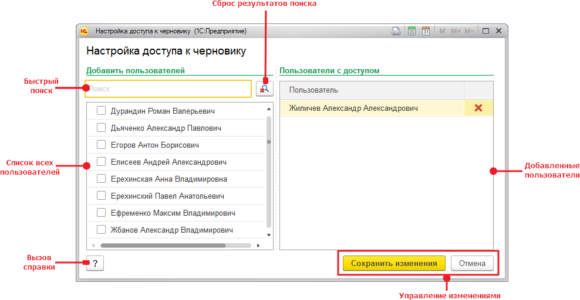

Настройка доступа к черновику
Изначально доступ к черновику есть только у автора. Но автор может предоставить доступ и другим пользователям при помощи текущего окна настройки доступа.

Окно настройки состоит из следующих областей:
- Быстрый поиск - позволяет найти пользователя по полному наименованию или части наименования.
- Список всех пользователей - отображает актуальный список пользователей. Из списка исключаются неактивные и служебные пользователи.
- Сброс результатов поиска (Ctrl+Shift+C) - отображает полный список пользователей, очищает поисковую строку и устанавливает фокус на ней.
- Добавленные пользователи - список пользователей, которым будет предоставлен доступ к черновику. Рядом располагается кнопка удаления пользователя из списка.
- Управление изменениями - кнопки сохранения и отмены изменений.
- Вызов справки (F1) - кнопка для вызова данной справочной информации.
Добавить пользователя в список доступа к черновику можно двумя способами: 1 - установить напротив имени пользователя флажок; 2 - сделать двойной клик мышью по имени пользователя. Точно так же можно исключить пользователя из списка доступа к черновику.